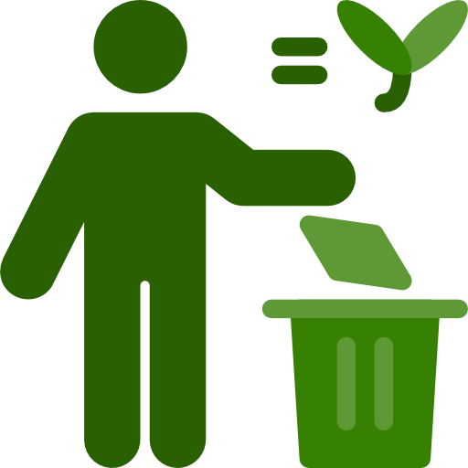
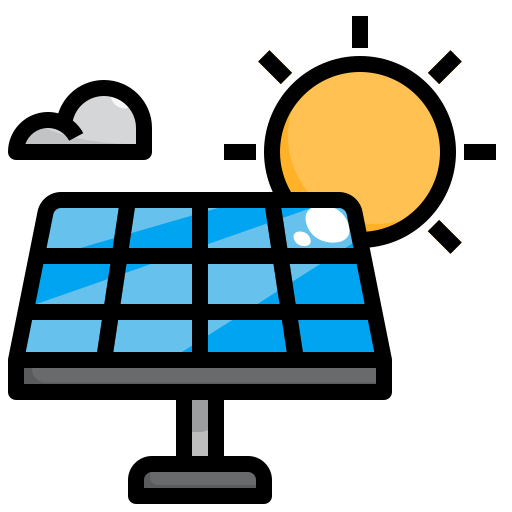

¿Te has preguntado alguna vez qué significa realmente la Responsabilidad Extendida del Productor (REP) en la gestión de los RAEE?
Descubriendo el papel de cada uno en la gestión de RAEE
Productor
Es el principal generador de AEE. Esta categoría abarca a quienes diseñan, fabrican, ensamblan o importan un dispositivo al mercado por primera vez.
Comercializador/Distribuidor
Son las personas o entidades encargadas de llevar los productos al mercado, ya sea vendiéndolos directamente al consumidor o distribuyéndolos a través de diversos canales.
Consumidor o Usuario Final
Es quien adquiere o utiliza el AEE. Su responsabilidad es doble, ya que no solo decide qué aparato comprar, sino que también influye en su destino una vez que ha finalizado su vida útil o deja de funcionar.

Gestores Ambientales
Estos individuos u organizaciones se encargan de administrar los RAEE. Sus funciones incluyen la recolección, el tratamiento y el reciclaje de estos dispositivos, asegurando siempre un manejo ambientalmente responsable.

Administración Pública
Las entidades gubernamentales son responsables de diseñar y aplicar las políticas, regulaciones y normativas relacionadas con la gestión de RAEE. Su rol es fundamental para asegurar que todos los actores involucrados operen conforme a los estándares establecidos.

Gobierno
Cada municipio tiene sus propias normativas y prácticas en cuanto a la gestión de residuos, estas entidades son responsables de gestionar y supervisar el tratamiento adecuado de los RAEE.

Recuerda que…
Los AEE (Aparatos Eléctricos y Electrónicos) son dispositivos que necesitan energía eléctrica o campos electromagnéticos para funcionar y desempeñar una tarea específica. Dentro de esta categoría se encuentran artículos como teléfonos móviles, computadoras, televisores y electrodomésticos, entre otros.
Clasificación de los AEE
¿Sabes cómo nos clasifica el Acuerdo Ministerio 067 a los RAEE?

Aparatos de intercambio de temperatura
Comprende dispositivos como aires acondicionados, refrigeradores y congeladores.

Monitores, pantallas y dispositivos con superficies superiores a 100 cm²
Incluye televisores, monitores de computadora y pantallas de proyección.
Grandes aparatos
Son aquellos con una dimensión exterior mayor a 50 cm, como lavadoras, secadoras y lavavajillas.
Pequeños aparatos
Dispositivos cuya mayor dimensión no supera los 50 cm, como tostadoras, licuadoras y planchas.

Aparatos de informática y telecomunicaciones pequeños
Equipos con dimensiones inferiores a 50 cm, como computadoras portátiles, teléfonos móviles e impresoras.

Paneles fotovoltaicos
Dispositivos utilizados para generar energía solar.
Recuerda que…
Este instructivo se enfoca en aplicar la REP a los AEE, asegurando un manejo adecuado cuando estos se convierten en residuos peligrosos o especiales. Bajo la REP, los productores deben establecer sistemas para recolectar y tratar estos residuos de forma segura, en colaboración con gestores ambientales debidamente acreditados por las autoridades competentes.
Lámparas de descarga y/o lámparas led en desuso
Estas lámparas están reguladas por el Acuerdo Ministerial 097, ya contemplada en el COA y RCOA, para este tipo de productos. De acuerdo con estas normativas, los fabricantes de lámparas de descarga son responsables no solo de garantizar un rendimiento eficiente de sus productos, sino también de minimizar su impacto ambiental al final de su vida útil.
RAEE y la Economía Circular
¿Te has preguntado alguna vez qué significa realmente la Responsabilidad Extendida del Productor (REP) en la gestión de los RAEE?
RAEE
Residuos de Aparatos Eléctricos y Electrónicos. Aquí se incluyen los dispositivos electrónicos que han llegado al final de su vida útil y deben ser reciclados correctamente.
Enlace entre RAEE y Economía Circular
Reutilizar, reparar, reciclar… ¡dando una nueva vida a nuestros dispositivos! La economía circular permite reducir el desperdicio de recursos y maximizar su reutilización.

Economía Circular
Un modelo que tiene como objetivo maximizar el valor de los recursos y minimizar la generación de residuos. El reciclaje y la reutilización son claves en este proceso.
Recuerda que..
El Anexo I del Acuerdo 067 especifica las categorías de AEE. Sin embargo, quedan excluidos de la aplicación de este acuerdo los siguientes elementos:
- 1. Baterías de plomo ácido
- 2. Baterías de tracción
- 3. Transformadores
- 4. Lámparas de descarga
- 5. Luminarias
- 6. AEE profesionales
- 7. Equipos que contengan fuentes radioactivas o selladas.
Beneficios
Recuperación de materiales: menos extracción, más reutilización.
Reducción de la contaminación: menos residuos, más sostenibilidad.

Creación de empleo: más oportunidades laborales en la gestión de RAEE.
Inclusión social: brindando oportunidades para todos.